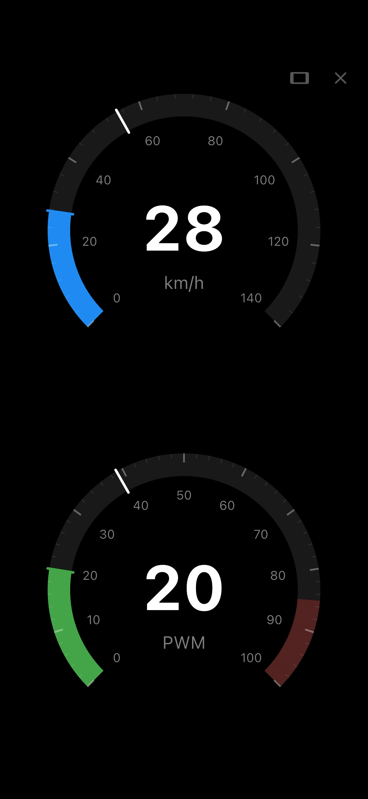
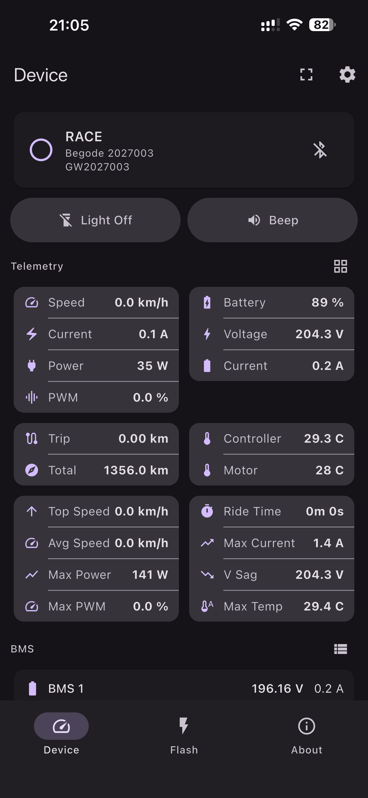
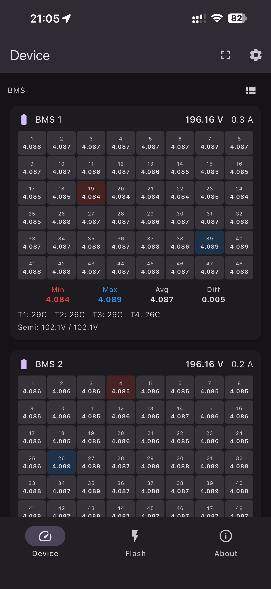
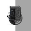
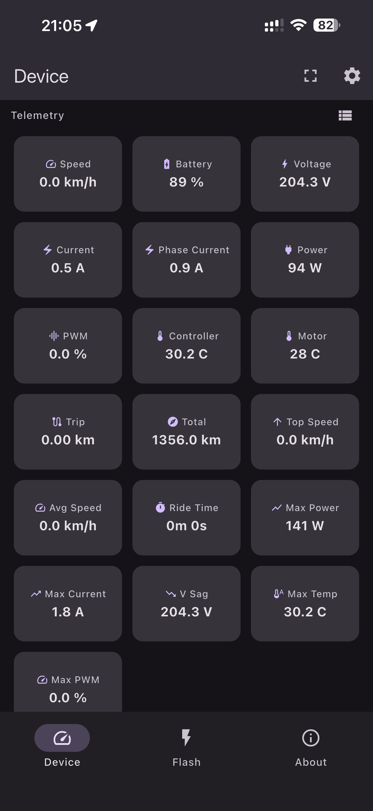
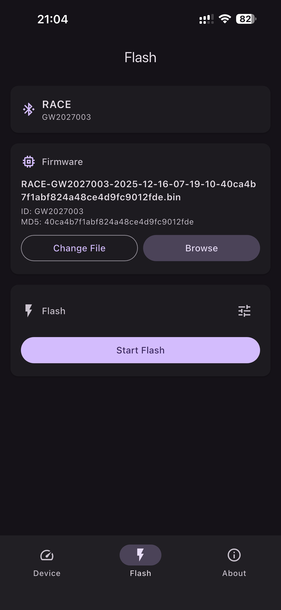
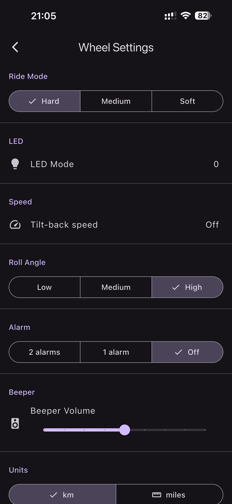

BGD Flasher
펌웨어 플래싱, 실시간 텔레메트리, Begode, Gotway & SV 전동휠의 완전한 설정 제어.





BGD Flasher 다운로드펌웨어 플래싱, 실시간 텔레메트리, Begode, Gotway & SV 전동휠의 완전한 설정 제어.



하나의 앱에서 전동휠을 모니터링, 설정, 업데이트.
속도, 전압, 전류, 전력, PWM, 온도, 주행 거리 및 세션 통계 — 블루투스로 실시간 전송.
두 배터리 팩에서 최대 48셀의 셀 전압. 최소/최대/평균, 온도 센서 및 셀 불균형 조기 감지.
동적 색상 경고가 있는 전체 화면 속도계와 PWM 게이지. 최고 속도와 최대 PWM 추적.
펌웨어 카탈로그 탐색 또는 커스텀 파일 로드. CRC16 검증 및 MD5 해시 검증이 포함된 YMODEM 프로토콜.
주행 모드, 속도 제한기, 알람, LED, 비프 볼륨, 기울기 각도, 자이로스코프 캘리브레이션 — 모두 블루투스로.
계정 불필요, 분석 없음, 광고 없음, 추적 없음. 모든 데이터는 기기에 보관.
전동휠의 완전한 제어를 원하는 라이더를 위해 설계.
레이스 대시보드
라이브 텔레메트리

메트릭 그리드
BMS 모니터

펌웨어 플래싱

설정
모든 BLE 호환 Begode/Gotway 전동휠과 호환.
스톡 펌웨어
JN 펌웨어
CF 커스텀 펌웨어
BF 펌웨어 (BMS 포함)